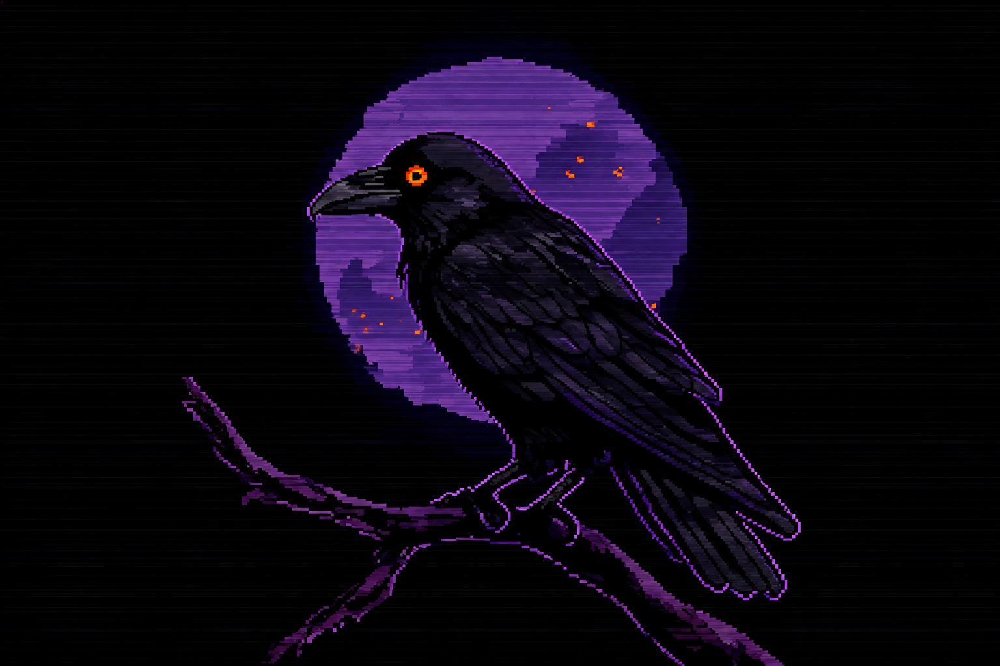

FIELD
FIELDNOTES · 2016Stardew Valley
Stardew Valley
A warm, thoughtful escape where small routines, memorable neighbors, and the changing seasons make a home worth returning to.
Independent games. Honest takes.
A field guide to the strange, beautiful, and unforgettable corners of indie gaming.

The latest dispatches
FIELDA warm, thoughtful escape where small routines, memorable neighbors, and the changing seasons make a home worth returning to.
 FIELD
FIELDA gentle town-building life sim set after the great adventure—comfortable and inviting, if a little repetitive over time.
 FIELD
FIELDTurn a barren world into a living one in a peaceful, deeply satisfying slow-burn survival adventure.
 FIELD
FIELDA playful, macabre mix of dungeon runs and cult management with an art style all its own.
Small games can leave the biggest footprints.
A NOTE FROM THE REVIEW DESKYour next save file